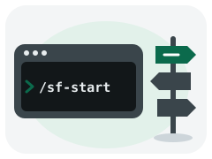
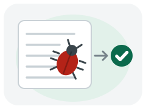
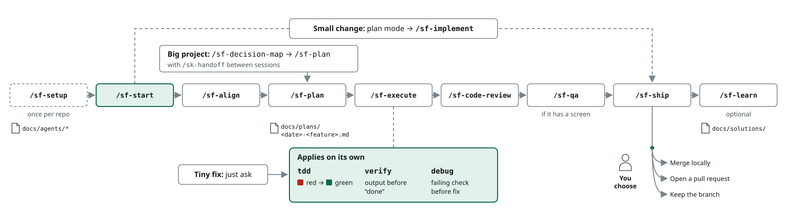
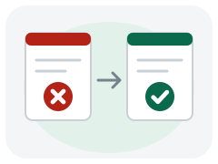
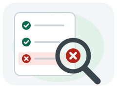

Install sf-core
Adds the core skills, and skills-core with them.
Free Claude Code skills that test, review and prove each change.
/plugin install sf-core --marketplace rishabh0111/software-factory/sf-setup/sf-startAdds the core skills, and skills-core with them.
/sf-setupRecords your tracker, commands and labels. Once per repo.

/sf-startAsks what you're doing, then names the next command.
Common paths, not a fixed pipeline. Every command also works on its own.
Tests and verification apply on their own.

sf-debugA failing check comes first, then the fix.
/sf-align/sf-plan/sf-execute/sf-code-review/sf-shipAgree the design, then plan, build, review and ship.
/sf-align/sf-plan/sf-design/sf-execute/sf-code-review/sf-qa/sf-shipThe feature path, plus design first and browser QA.
/sf-decision-map/sf-plan/sk-handoffMap open decisions, then spec and tickets. Hand off between sessions.

One common path, not a fixed pipeline: each step also runs on its own. Once per repository, /sf-setup writes docs/agents/*. A feature often runs left to right: /sf-start, /sf-align, /sf-plan, /sf-execute, /sf-code-review, /sf-qa if the work has a screen, /sf-ship, and optionally /sf-learn. Under /sf-execute, three disciplines apply on their own: tdd, red then green; verify, output before done; and debug, a failing check before a fix. A tiny fix skips the path: you just ask, and the same disciplines apply. A big project enters before /sf-plan through /sf-decision-map, then /sf-plan, with /sk-handoff between sessions.
These apply on their own. Everything else waits until you type it.

sf-tdd
A failing test before any implementation code.

sf-debug
Reproduce with a failing test, then fix.
sf-verify
Nothing is done until fresh command output shows it.
sf-code-review
Standards, spec and quality, reviewed in parallel.